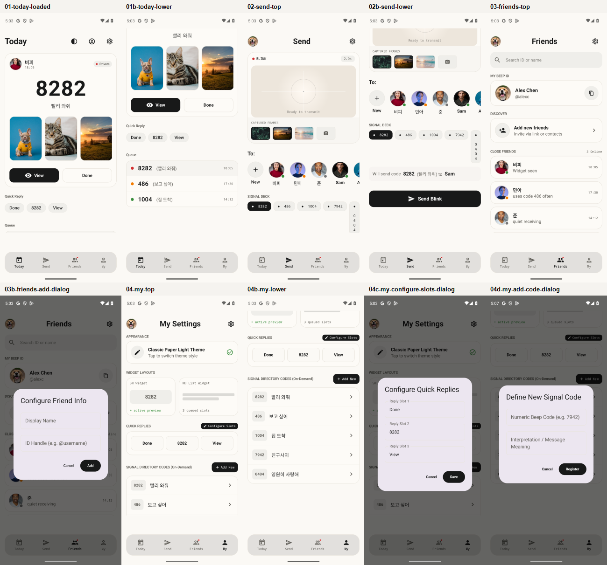
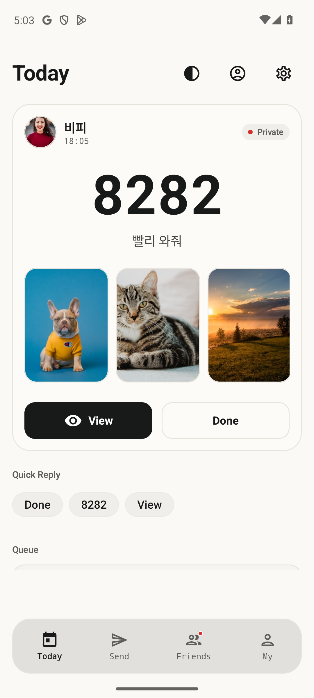
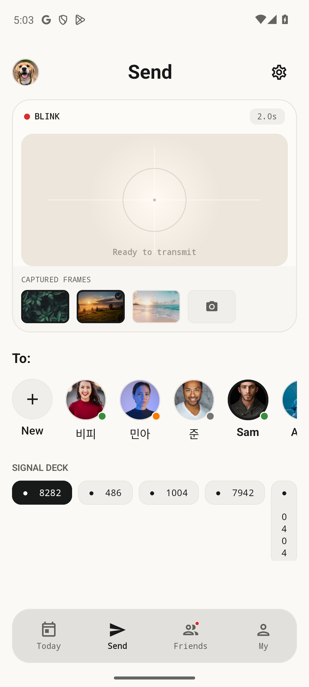
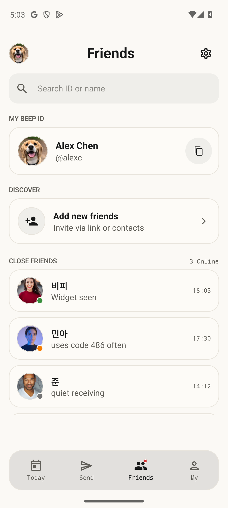
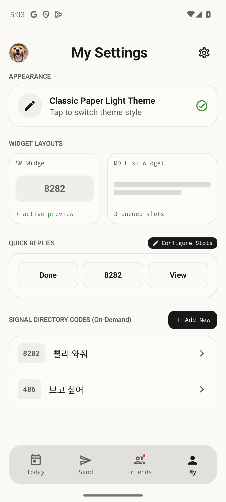
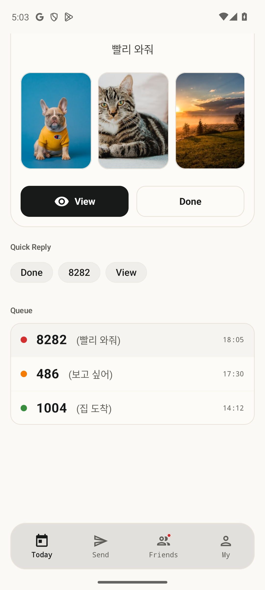
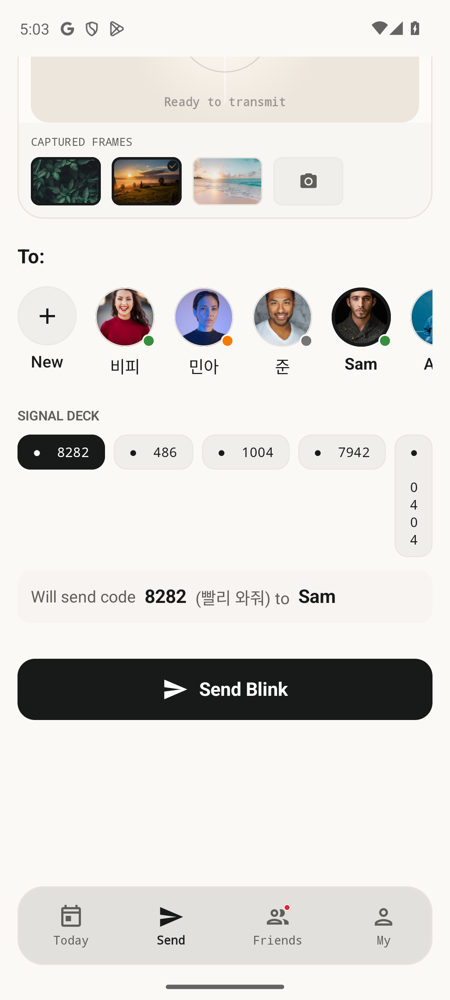
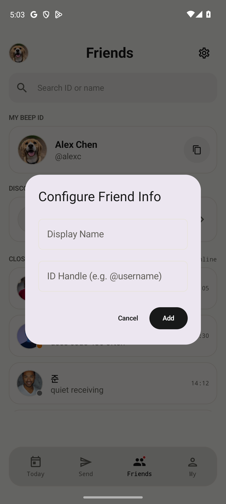
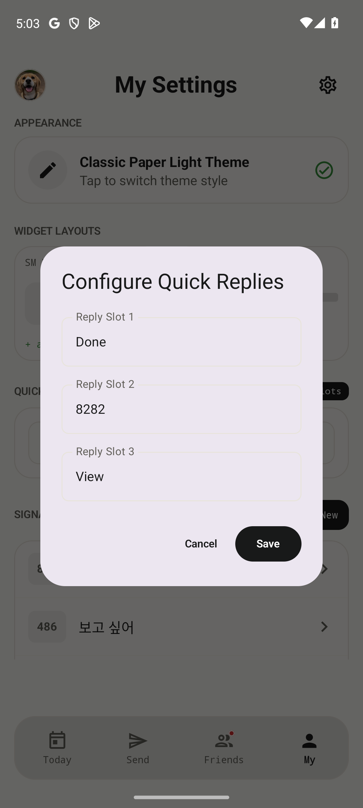
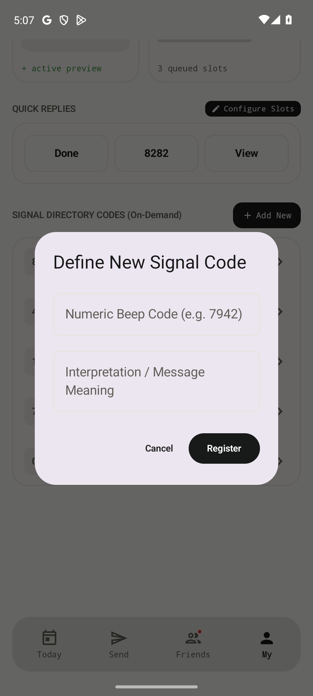

Beep Get Kotlin final mockup
최종 기준은 Stitch/Kotlin 캡처입니다. 이 보드는 Today, Send, Friends, My Settings와 lower/dialog 상태를 그대로 모아 앱 구현 또는 다음 HTML 재현 작업의 기준으로 쓰기 위한 산출물입니다.
FINAL SOURCE · KOTLIN CAPTURE
전체 기준 보드
한 장으로 전체 흐름을 확인합니다. 중간 재해석 목업보다 이 캡처 보드가 현재 최종 시안입니다.

주요 화면
탭 구조는 Today / Send / Friends / My 입니다.




상태 화면
스크롤 하단, 친구 추가, 빠른 답장 설정, 새 코드 등록까지 포함합니다.





진행 기준
다음 작업은 이 보드를 RN 화면으로 옮기는 쪽입니다.
1. Final artifactmockup-kotlin-final.html을 최종 목업 파일로 고정합니다.
2. Scratch artifactmockup-mobbin-ui-refresh.html은 레퍼런스/실험 파일로만 둡니다.
3. Implementation targetToday, Send, Friends, My Settings의 화면 구조를 앱 코드에 순서대로 맞춥니다.
4. VerificationHTML 렌더, 이미지 로드, 모바일 화면 스모크 순으로 확인합니다.